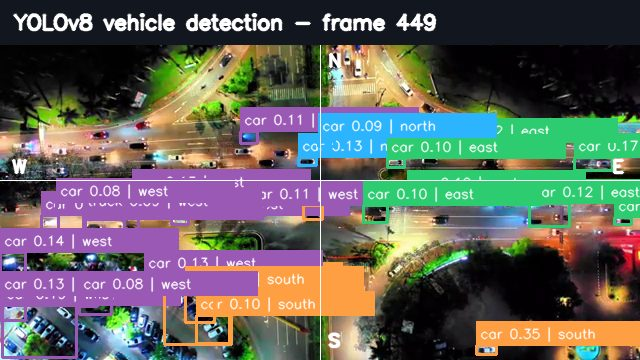
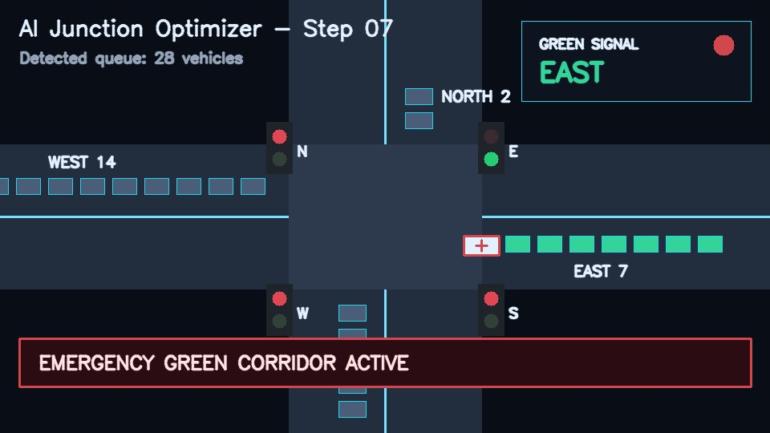

Smart-city traffic command center
AI Junction Optimizer
Adaptive signal control with YOLOv8 vehicle detection and emergency green corridor.
Current green
East
Green duration
50s
Congestion
High
High
Wait saved
525
Traffic Video Input

Detected 28 vehicles in this frame.
AI Junction Output
Adaptive Signal Model
Live decision

Lane Vehicle Counts
Signal Decision
Smart Lane Recommendation
Recommended Lane: NORTH
Lowest traffic density detected
Fixed Timer vs AI Timer
AI Queue28 vehicles
Fixed Queue69 vehicles
Current Gain75 units saved
Queue Pressurelower is better
AI keeps the active queue lower while clearing the emergency lane.
Cumulative Wait Trenddemo timeline
AI timer
Fixed timer
Lower queue means vehicles are clearing faster.
System Overview Live decision context
CongestionHigh
ReasonEmergency priority
Wait reduction75 units
EmergencyGreen corridor active
StrategyServe East now